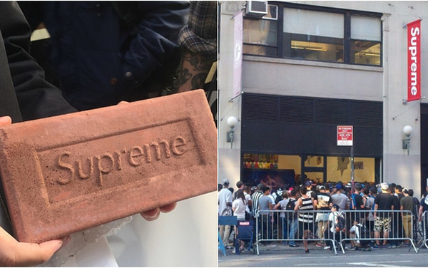
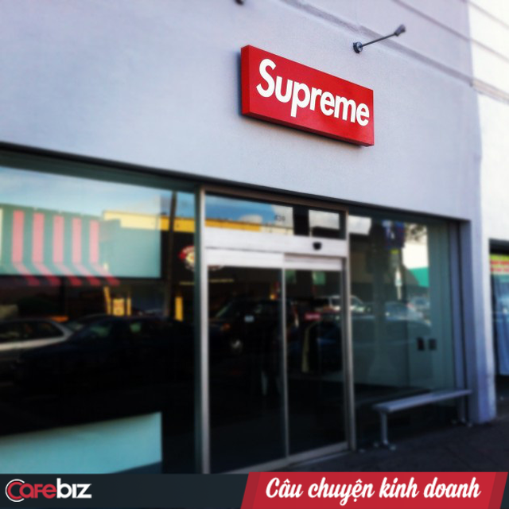
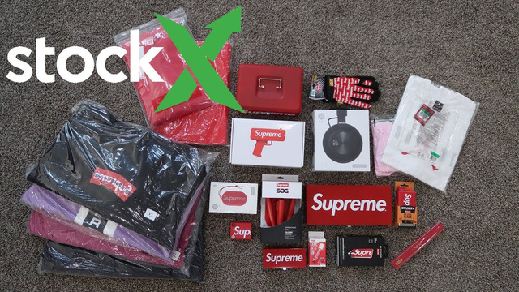

Vì sao người ta sẵn sàng xếp hàng mua một cục gạch Supreme?
Supreme là một thương hiệu biết dung hòa giữa nghệ thuật và văn hóa. Nó thúc đẩy nhu cầu người tiêu dùng bằng việc chạm tới khao khát và đam mê của họ chứ không phải bằng quảng bá thương hiệu.

Dù không có nhiều chiến dịch quảng bá trong suốt 25 năm tồn tại nhưng tại 11 cửa hàng Supreme trên toàn thế giới, người hâm mộ và những tín đồ thời trang đường phố luôn sẵn lòng xếp hàng nhiều giờ để mua những món đồ mới nhất của hãng.
Chính sự cuồng tín này đã thúc đẩy Tập đoàn Carlyle đầu tư 500 triệu USD (chiếm khoảng 50% cổ phần Supreme) vào năm 2017. Nhờ đó, tổng giá trị hãng thời trang này đã chạm mức 1 tỷ USD.

Một cửa hàng Supreme.
Không ít người vẫn thắc mắc làm thế nào một cửa hàng chuyên đồ trượt ván rất hiếm khi quảng cáo và quảng bá sản phẩm lại có thể thu hút sự chú ý của một nhà đầu tư lớn cũng như lượng tín đồ khổng lồ đến vậy. Và dưới đây là câu chuyện của Supreme:
Khởi đầu khiêm tốn
Supreme ra mắt năm 1994, khi nhà thiết kế James Jebbia mở một cửa hàng bán quần áo và thiết bị trượt ván nhỏ trên phố Lafayette ở SoHo, New York. Jebbia, người từng làm việc với vận động viên trượt ván kiêm nhà thiết kế Shawn Stussy, đã nói rằng anh bị cuốn hút bởi sự thoải mái và phong cách của những người trượt ván trẻ.
Nhà sáng lập James Jebbia.
Supreme thậm chí còn tài trợ cho một nhóm các vận động viên trượt ván chuyên nghiệp gồm Justin Pierce và Harold Hunter - hai diễn viễn trong bộ phim kinh điển đình đám "Kids". Theo tạp chí Vogue, khi cửa hàng Supreme đầu tiên khai trương, nhân viên đầu tiên của họ là một số diễn viên phụ từ bộ phim này.
Thương hiệu này đã phát triển rất chậm. Phải mất một thập kỷ để Supreme mở cửa hàng thứ hai tại Los Angeles. Hiện Supreme có hai cửa hàng ở New York, sáu ở Nhật Bản, nhiều điểm bán ở Paris và London. Cuối năm nay, họ sẽ mở thêm một địa điểm nữa tại San Francisco.
Uy tín của Supreme đã nhanh chóng lan truyền toàn cầu nhờ việc hợp tác với các thương hiệu lớn như Louis Vuitton, Nike, Vans và Levi’s. Sự hợp tác với nhiều nghệ sĩ và thương hiệu khác nhau là một điều khiến Supreme trở nên thú vị vì nó đã mở mang cách người tiêu dùng nhìn nhận văn hóa trượt ván.
Giờ đây, ở khắp nơi trên thế giới, có thể thấy rằng những người hâm mộ Supreme luôn sẵn lòng xếp hàng nhiều giờ chỉ đề chờ mua một chiếc áo hoặc mũ với giá từ 30 USD đến 100 USD hay một chiếc áo khoác với giá từ 150 USD đến 450 USD.
Hội tín đồ và những kẻ làm hàng nhái
Vậy các tín đồ của Supreme sẽ làm gì nếu họ không mua được món đồ yêu thích trước khi chúng bị bán hết? Lúc này, thị trường bán lại sản phẩm của Supreme trở nên sôi động hơn bao giờ hết. Các trang web như StockX và các đại lý khác sẽ bán những món đồ "hết hàng" đó với giá cao ngất ngưởng. Trong năm qua, những chiếc áo phông đơn giản với logo Supreme được bán với giá trung bình hơn 900 USD trên StockX trong khi nếu mua tại cửa hàng của hãng, bạn chỉ phải bỏ ra 30 USD.

Trang StockX bán lại nhiều đồ của Supreme với giá khá cao.
Một trong những điểm cuốn hút của Supreme là tiểu sử đáng tôn trọng – sự khởi đầu rất khiêm tốn đến hàng thập kỉ sau mới trở nên nổi tiếng toàn cầu. Nhiều sản phẩm của hãng còn gợi nhắc mọi người về những biểu tượng nổi tiếng trong nền văn hóa pop như Miles Davis hay The Muppets.
Năm 2018, Supreme thắng vụ kiện với một đơn vị khác là "Supreme Italia" – công ty chuyên sản xuất và bán những mặt hàng giống sản phẩm của Supreme, đặc biệt là sự giống nhau ở logo "Supreme" trên sản phẩm. Công ty đạo nhái này đã phải rút khỏi thị trường Ý nhưng vẫn tiếp tục bán hàng tại Trung Quốc và Tây Ban Nha.
(công ty thua kiện Supreme Italia)
Duy trì sự cuồng tín
Sự nổi bật và phổ biến của Supreme với giới trẻ một phần là vì sản phẩm mang tính biểu tượng của văn hóa thanh niên nổi loạn.
Supreme là một thương hiệu biết dung hòa giữa nghệ thuật và văn hóa. Nó thúc đẩy nhu cầu người tiêu dùng bằng việc chạm tới khao khát và đam mê của họ chứ không phải bằng quảng bá thương hiệu.
Nam ca sĩ Justin Bieber mặc trang phục của Supreme biểu diễn.
Thay vì quảng cáo sản phẩm theo cách thông thường, Supreme đã biến những đợt ra mắt sản phẩm của họ thành một dạng sự kiện trải nghiệm nơi người ta phải đến điểm nọ điểm kia để săn hàng, mua vé, đăng kí tên vào danh sách hay đứng xếp hàng... Điều này khiến dư luận tò mò và tạo nên tiếng tăm nhất định cho thương hiệu.
Rất nhiều sản phẩm kì cục này có thể mua lại trên mạng, ví dụ bạn có thể mua cục gạch Supreme với giá 130 USD trên StockX.
Một chuyên gia nhận định: "Thương hiệu của họ mạnh đến nỗi họ có thể sản xuất bất cứ thứ gì, miễn là có logo của Supreme và người dùng sẽ đổ xô đi mua, cho dù đó chỉ là một cục gạch".
Ảnh hưởng từ nhà đầu tư?
Không loại trừ khả năng Tập đoàn Carlyle vì muốn tăng doanh thu mà thay đổi chiến lược phát hành sản phẩm hiện tại của Supreme để tiếp cận thị trường đại chúng nhiều hơn. Tuy nhiên, họ vẫn còn phải xem xét xem những người hâm mộ Supreme sẽ đón nhận động thái này như thế nào.
Liệu mọi thứ sẽ thay đổi và Supreme sẽ mất chất riêng?
Đã hai năm kể từ khi thỏa thuận đó được tuyên bố và không có bất kì dấu hiệu nào cho thấy Supreme sẽ thay đổi lớn về lối kinh doanh của mình. Điều này có lẽ sẽ khiến các fan "cứng" của Supreme hài lòng.
(Nguồn: Cafebiz)